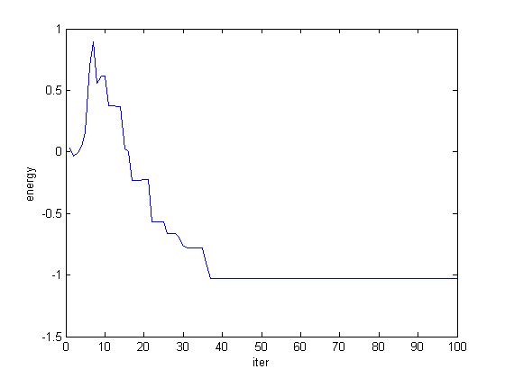
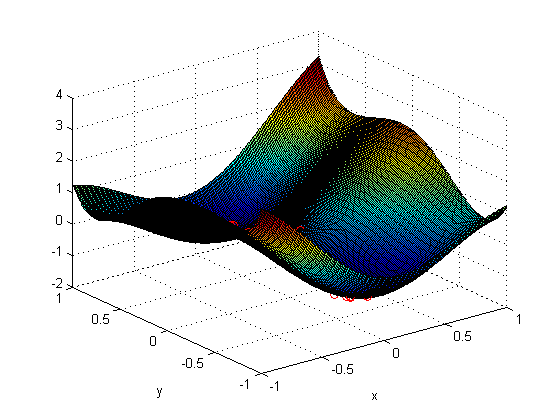
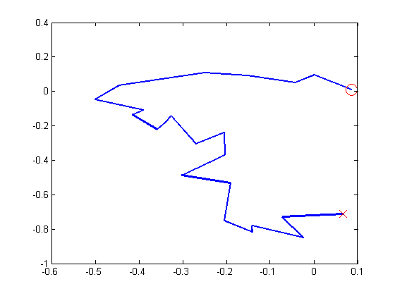

Demo of simulated annealing on a 2D function
The so-called "six-hump camelback" function has several local minima
in the range -3<=x<=3 and -2<=y<=2. It has two global minima, namely
f(-0.0898,0.7126) = f(0.0898,-0.7126) = -1.0316.
camel = @(x,y)(4-2.1*x.^2+x.^4/3).*x.^2+x.*y+4*(y.^2-1).*y.^2;
energy = @(p) camel(p(1),p(2));
setSeed(1);
if 0
opts = struct(...
'proposal', @(x) (x+(randperm(length(x))==length(x))*randn/10), ...
'maxIter', 5000, ...
'temp', @(T,iter) (0.8*T), ...
'convWindow', 20);
else
opts = struct(...
'proposal', @(x) (x+gaussSample(struct('mu', [0 0],'Sigma', 0.01*eye(2)))), ...
'maxIter', 5000, ...
'temp', @(T,iter) (0.8*T), ...
'convWindow', 20);
end
x0 = [0 0];
[xopt fval samples energies acceptRate] = simAnneal(energy, x0, opts);
xopt
fval
acceptRate
figure; plot(energies)
xlabel('iter')
ylabel('energy')
XS = -1:0.01:1; YS = -1:0.01:1;
[xs, ys]=meshgrid(XS,YS);
Z = feval(camel, xs, ys);
fig=figure; surf(xs, ys, Z)
figure(fig);hold on
S = size(samples,1);
for i=1:S
[junk,xx]=min(abs(XS-samples(i,1)));
[junk,yy]=min(abs(YS-samples(i,2)));
h=plot3(XS(xx),YS(yy),energies(i),'ro');
xlabel('x'); ylabel('y');
end
figure;
h=plot(samples(:,1), samples(:,2)); set(h,'linewidth',2);
hold on
h=plot(samples(1,1), samples(1,2), 'ro'); set(h,'markersize',12)
h=plot(samples(end,1), samples(end,2), 'rx'); set(h,'markersize',12)
xopt =
0.067517345961947 -0.713282216092175
fval =
-1.029660403912731
acceptRate =
0.230000000000000
  